Radek RadOn
 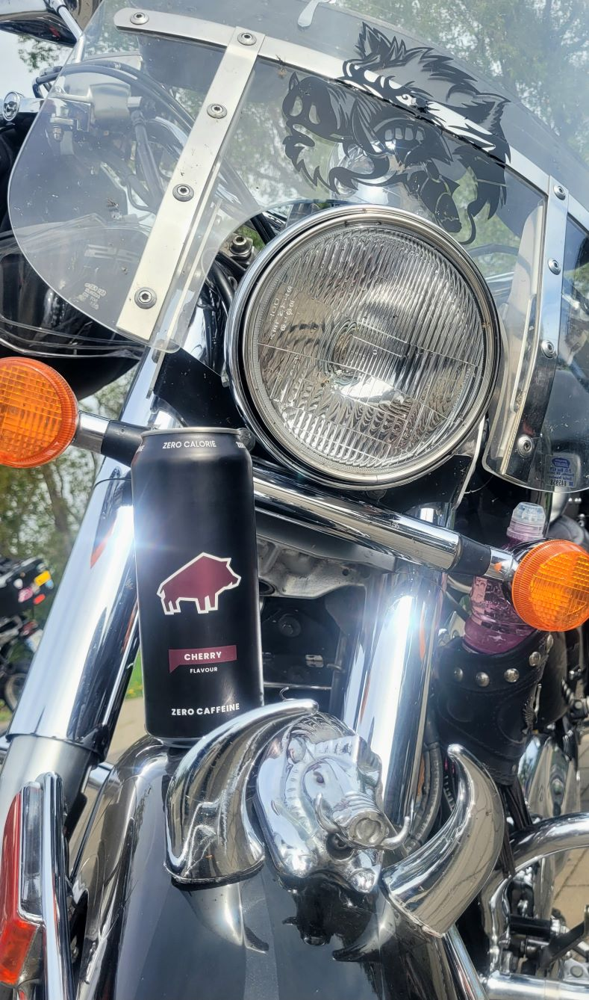
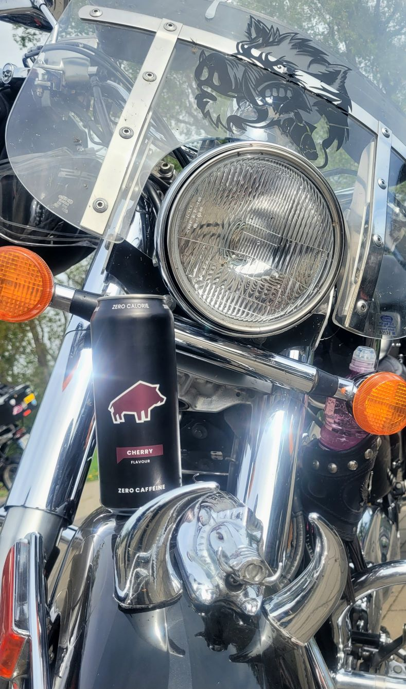
Cześć, chciałbym przedstawić siebie i mojego "DZIKA"
To była miłość od pierwszego wejrzenia i motyacja do pójścia krok dalej. Stawiałem swoje pierwsze kroki w dorosłym życiu na dwóch kółkach chociaż całe życie czymś jeździłem w młodości , wiadomo dzieciak ze wsi więc komarki romety Simsony wski wszystko było ale.to było jako środek do przemieszczania się.
Zawsze imponowało mi to jak do mojego sąsiada który miał Junaka przyjeżdżały na weekend duże motocykle , choppery a on ze znajomymi motocyklistami w garażu robił dobre imprezy z kolegami przy dzwiekach Iron Madein🤘🔥
Po ustatkowaniu się w końcu przyszedł czas w którym stwierdziłem że nie ma na co czekać i zacząłem przygodę kupując Hondę Shadow 125 z 2000go roku - piękny sprzęt na początek,cały czarny w oryginałach No cudeńko, kto widział ten wie co mówię. Zacząłem jeździć I mptocykl stał się nie tylko środkiem lokomocji a wręcz pasją I sposobem życia I na życie. Dzięki niemu poznałem mnóstwo wyjątkowych ludzi i jestem w miejscu w którym jestem 🤘🤘
Jednak apetyt rośnie w miarę jedzenia i chciałem czegoś większego i odpowiedniego do jazdy z moim plecaczkiem więc zacząłem szukać iiii... ZZNALAZLEM! po jakimś czasie natrafiłem na ogłoszenie- No i to był koniec ...koniec poszukiwań 😎😎😎 Był to najstarszy brat mojego Shadow 125 a mia owicie Shadow Sabre 1100- piękny dosłownie taki jaki sobie wymarzyłem , czarny świetnie ubrany z wygodnymi siedzeniami ,kuframi cały zrobiony ze smakiem w USA 🔥🔥
Nie miałem wtedy prawa jazdy ale postanowiłem napisać do sprzedającego i wypytać co i jak... wszystko mi pasowało (nawet cena 😉) i na koniec dość długiej rozmowy napisałem że ten motocykl i tak będzie mój i niech na mnie czeka. Minęło kilka dni , przemyślałem sprawę i podjąłem decyzję która zmieniła.moje życie- zorganizowałem pieniądze zapisałem się na prawo jazdy i pojechałem po motocykl do Bielska Białej 🔥🔥😎 obejrzałem posłuchałem i wiedziałem że już będzie mój i ze mną wróci..I wrócił 🔥🔥🔥
Mial pięknego srebrnego dzika że świecącymi oczami na przednim błotniku stąd też nazwa mówi sama za siebie. I nastał ten czas kiedy zostałem posiadaczem swojego DZIKA 🔥🔥 dokupowałem do niego różne akcesoria podkreślające i dopełniające motocykl w moim mniemaniu a że nie miałem jeszcze prawa jazdy to co wieczór schodziłem sobie do garażu odpalałem go i motywowałem się do tego żeby jak najszybciej wsiąść na niego i pojechać przed siebie 🔥🔥
Kiedy nastał ten moment gdy odebrałem plastik szybko wróciłem.do domu , przyodziałem zbroję i pojechałem teoretycznie do mechanika kilka kilometrów od domu ...a że droga okazała się być kręta to skoczyłem podróż z wynikiem 160km 🤣🤣 I tak właśnie już od ponad sezonu ja i mój DZIK wspólnie przemierzamy bezkresy naszych szos🤘🔥
Tomasz
 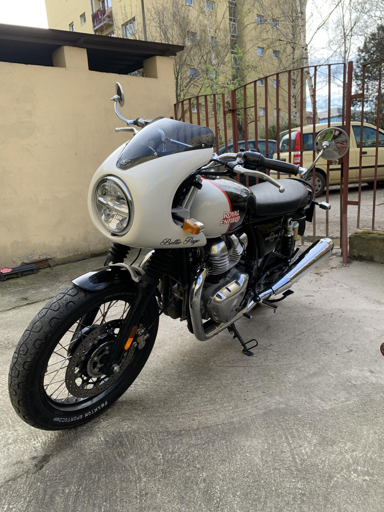
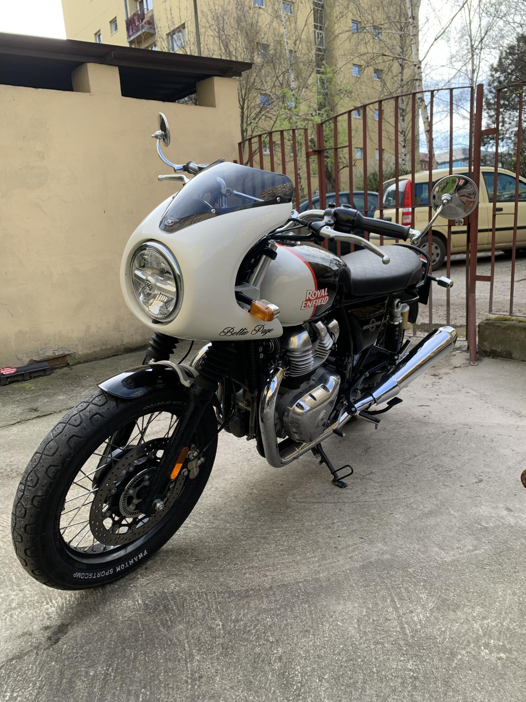
Moja historia z motocyklizmem zaczęła się...
...jak to się mówi, czym skorupka za młodu nasiąknie... Otóż od kiedy pamiętam, słuchałem opowieści dziadka, który był zapalonym motocyklistą w czasach powojennych, pokazywał mi zdjęcia swoich DKW, Gazeli, Panonii, Junaka, M'ki oraz wielu wielu innych.
Dziadek był na tyle zakręcony na punkcie jednośladów, że auto kupił dopiero po narodzinach swojej 3 córki bo fizycznie nie mógł już przewozić swojej małżonki i 3 dzieci na motocyklu i w koszu. Tak mijały lata, a ja co raz bardziej czułem potrzebę przeżycia tego samego. Może, dlatego że od dziecka pokazywane były mi motocykle obecnie uważane za zabytkowe, tak bardzo zapragnąłem jeździć na czymś co wygląda jak z ubiegłej epoki.
Z czasem moja pasja do historii i czasów przeszłych (a w szczególności do lat 50-60) przerodziła się na swój sposób w styl bycia - nie były to już tylko motocykle, ale też muzyka, moda, sztuka i wiele innych. Pamiętam jak dziś, kupiłem w 2019 roku wrześniowe wydanie Motocyklisty gdzie opisywali nowe modele Royal Enfielda - nowego Interceptora i Continentala GT. To było to - dotychczas serce biło szybciej tylko na widok ładnych kobiet, a tu po raz pierwszy poczułem niesamowite pragnienie posiadania tej konkretnej maszyny.
Lata mijały, w międzyczasie co raz bardziej zagłębiałem się w tematykę klasyków/neoklasyków (jeździłem wtedy na jakże wdzięcznym Benelli Imperiale) i cafe racerów , aż w końcu nadszedł ten moment i w czerwcu zeszłego roku odebrałem swojego Interceptora. Oczywiście zaraz po odbiorze wyleciałem nim trasą na Sobótkę - piękna pogoda i dźwięk silnika sprawiły u mnie taką radość, że zacząłem się drzeć i śmiać wniebogłosy (myślę, że każdy motocyklista miał chociaż 1 moment takiej euforii w swoim życiu), dopiero wtedy w pełni poczułem tą "wolność" o której wszyscy mówią. Mija już prawie rok od kiedy mam swój wymarzony motocykl i szybko nie planuję go zmieniać - w końcu tworzymy DUET DOSKONAŁY! Moja rada dla nowych motocyklistów - moto kupuje się sercem, nie rozumem.
Sylwia
Pasja to miłość, uwielbienie rzeczy, chwil, o których nieustannie się myśli
Czasem trudno to wytłumaczyć, to się po prostu czuje.Wiele z nas nie daje sobie prawa do pasji,uznając ją za towar luksusowy, na ktory w życiu pełnym obowiązków brakuje miejsca.Dobra wiadomość jest taka że: pasja jest doświadczeniem, do którego każdy może mieć dostęp.
Pasja nie którym kojarzy się z hobby.Jednak pasja jest czymś dużo więcej. O hobby mówimy, że to forma spędzania czasu,co brzmi letnio.
W pasji jest intensywność doznań. To silna potrzeba ,coś czego nie chcemy się wyrzec,bo czegoś istotnego by w,naszym zyciu brakowało.
Hobby się lubi ,pasję się kocha. I to jest miłość namiętna.Praktykowanie pasji daje głębokie przeżycie, które jest źródlem siły. Potencjałem pasji nie jest to,jak bardzo spektakularna lub czy oznacza bicie rekordów, tylko fakt,że wywołuje w nas spektakularne przeżycie. A bywa też że i przemianę. Odkrywamy,że istnieje coś, co zwykłemu życiu może nadać nadzwyczajny sens. Pasja idzie w parze z wysiłkiem. Zawsze.Ale takim co uskrzydla. To przeciwieństwo bierności i monotonii. Bo często największe poczucie szczęścia przychodzi po ogromnym wysiłku....💪
A to pomaga nie zgubić poczucia sensu w najmroczniejszych momentach życia.. Motocykle mogą być pasją, która odmienia życie . Wiąże się z tym cała ta otoczka, poczynając od specjalnego ubioru, a kończąc na zlotach .Może to okazać się doskonałą okazją do nawiązania wielu ciekawych i interesujących znajomości, do rozpoczęcia całkiem nowego rozdziału w życiu.Energia na trudny czas.... Jazda na motorze jest pasją, której poświęca się serce ♥.
Początki tego zamiłowania potrafią być różne.U mnie wystarczyła , jedna przejażdżka, podczas której krew szybciej pulsuje w żyłach, by już nigdy nie przestać o tym myśleć. Spędzając wolny czas na przejażdżce można pozostawić za sobą wszystkie problemy,złości i smuteczki dnia codziennego. Siadając na motor liczy się tylko ten moment ... ta chwila, wszystko inne jest wtedy nieistotne. To doskonały sposób na odprężenie się jazda na motorze pozwala zamknąć się w tym świecie, w całkiem odmienny sposób odczuwać otoczenie, poczuć adrenalinę która silnie uzależnia, sprawiając, ze po każdej skończonej jeździe myśli się już o następnej.:-) Ten, kto raz zakochał się w motocyklach, jest wierny tej pasji przez całe życie.
Pozdrawiam -Sylwia z motoczwartku.
Marta
 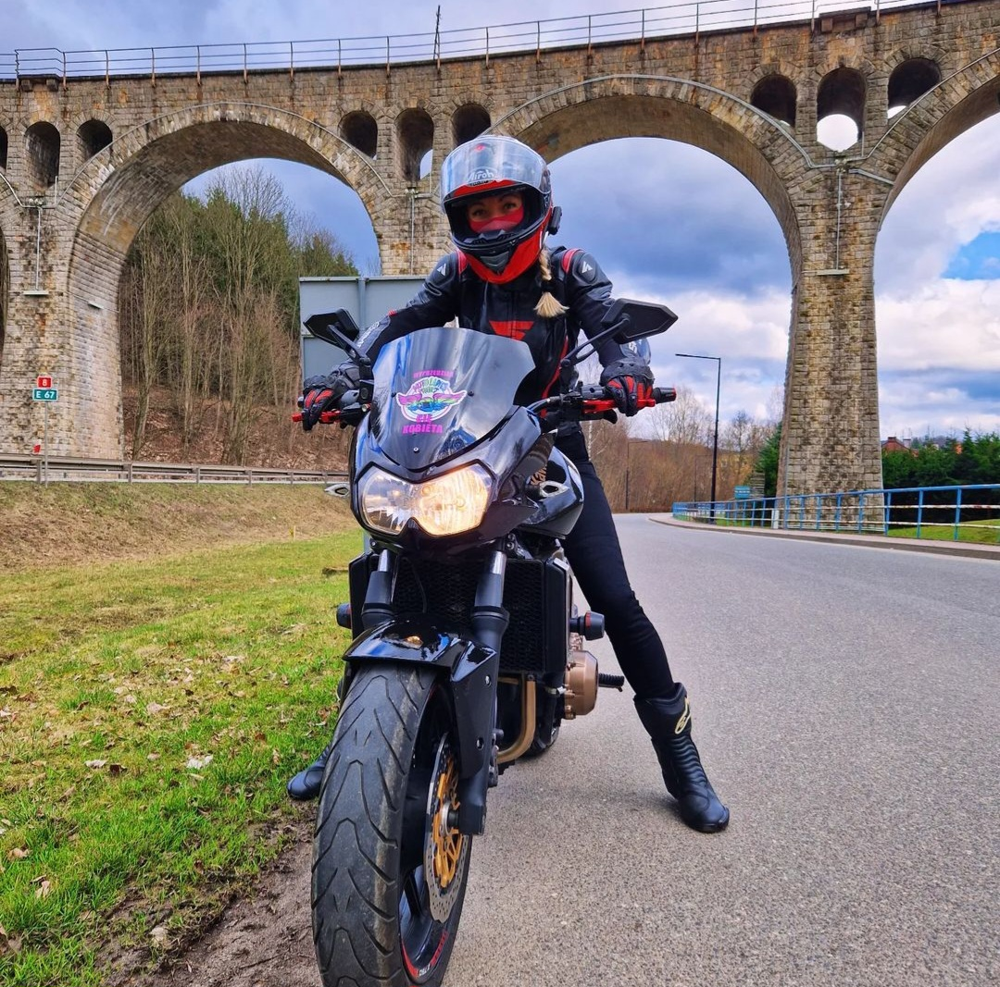
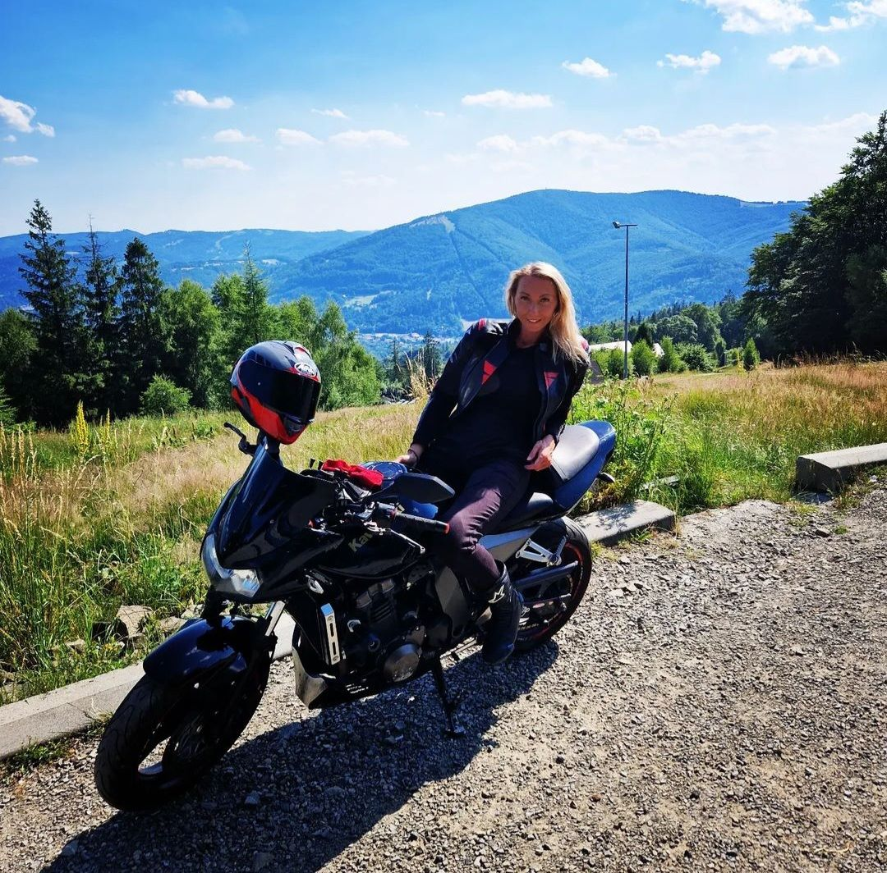
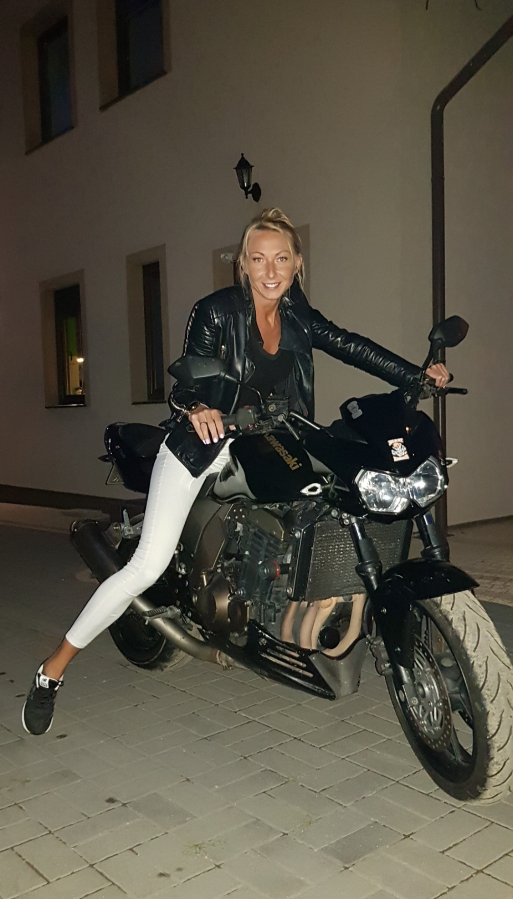
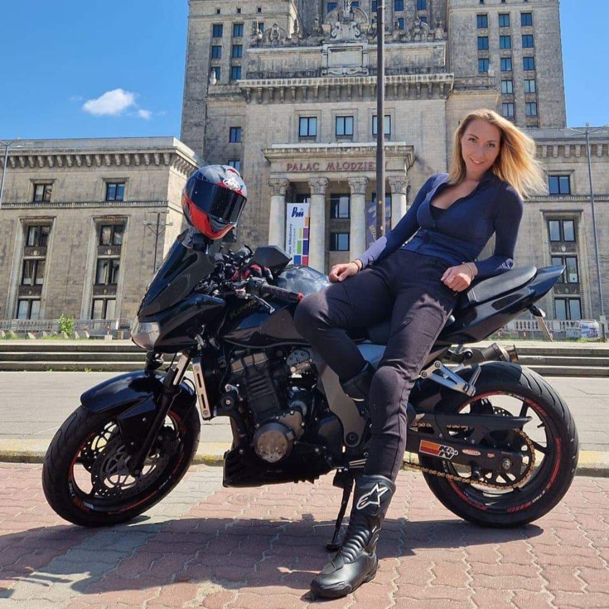
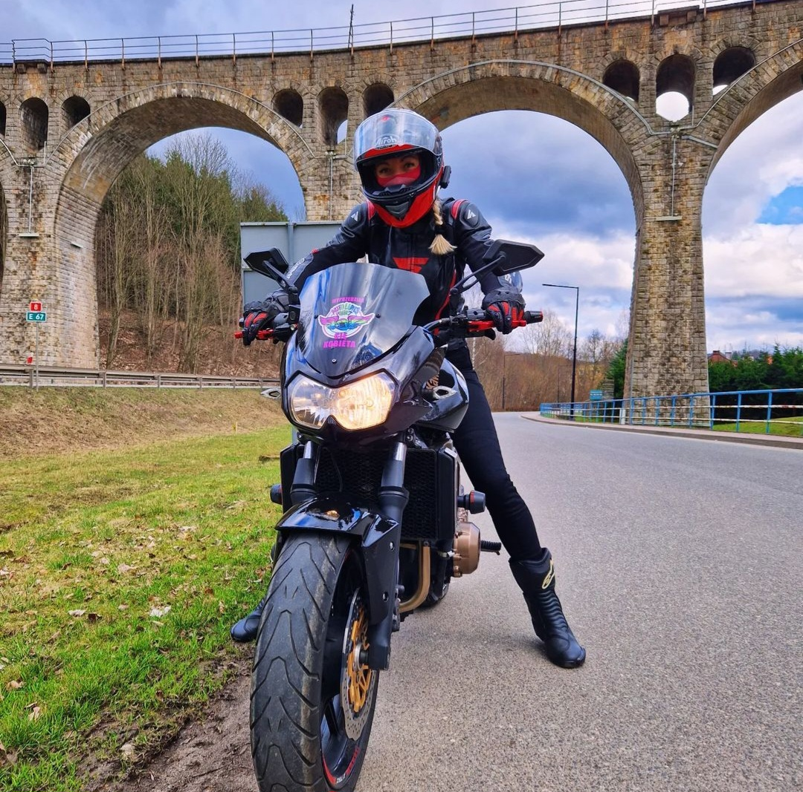
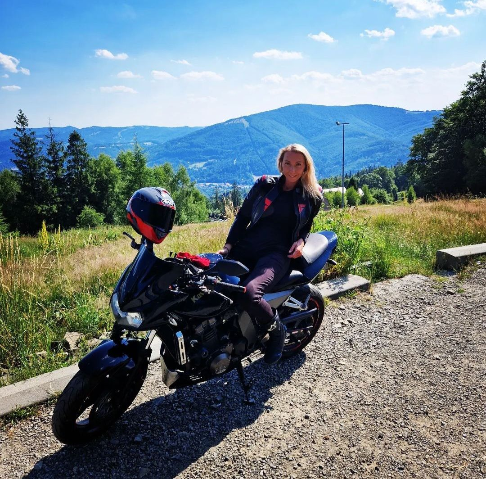
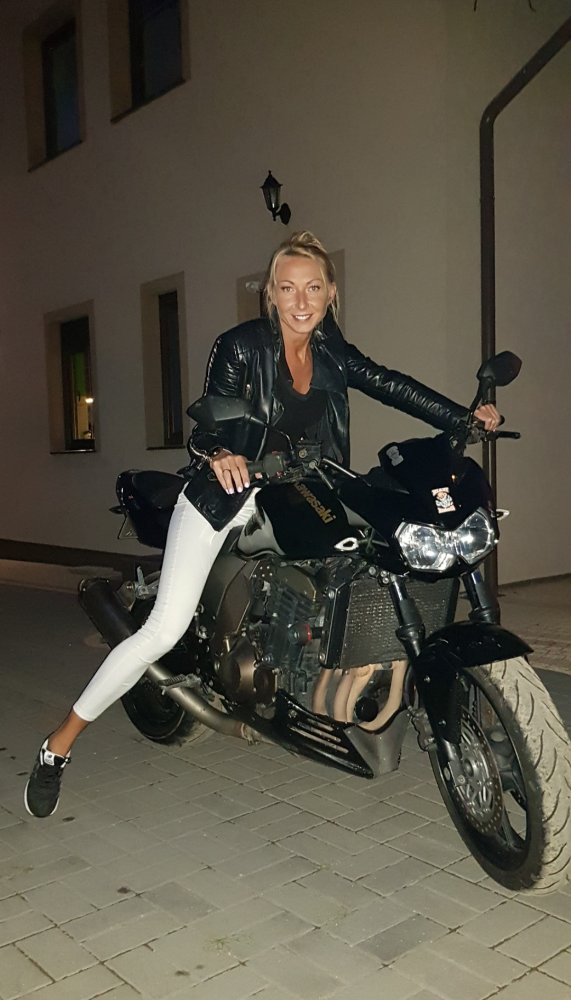
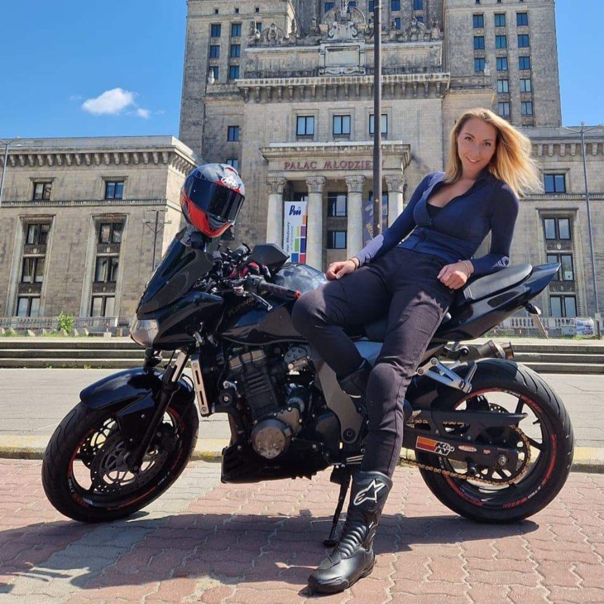
Mam na imię Marta, a mój motocykl to Kawcia (Kawasaki Z750)
Nasza historia, hmmm...
26 sierpnia 2021 roku mój mąż kupił motocykl, oczywiście bez mojej zgody. Żeby uszło mu to na sucho stwierdził, że to dla mnie. Nigdy nie jeździłam motocyklem nawet jako plecaczek. Cóż było robić, usiadłam, odpaliłam (oczywiście szybkie szkolenie gdzie są biegi, sprzęgło i hamulec) i ruszyłam, po chwili wiedziałam, że to jest to, była to miłość od pierwszego wejrzenia, a raczej ruszenia. Zrobiłam prawko na A (nie było tak łatwo, ale się nie poddawałam) i tak oto zostałam motocyklistką. A mój mąż niestety musiał kupić drugi motocykl, tym razem dla siebie.
Moja Kawcia zimuje oczywiście w domu w salonie, ale żeby nie stała tak bezczynnie, to staram się coś przy niej robić. Tej zimy padło na kolektor. Sama go wykręciłam, wyczyściłam i przykręciłam spowrotem. W zeszłym sezonie na Kawci zrobiłam przeszło 20 tyś. km po Polsce, w tym mam w planach Włochy. Moja Kawcia to takie lekarstwo na wszystko, gdy wsiadłam na nią świat staje się odrazu piękniejszy.
Rafał
Mam na imię Marta, a mój motocykl to Kawcia (Kawasaki Z750)
Poprostu jestem.
Marta K
 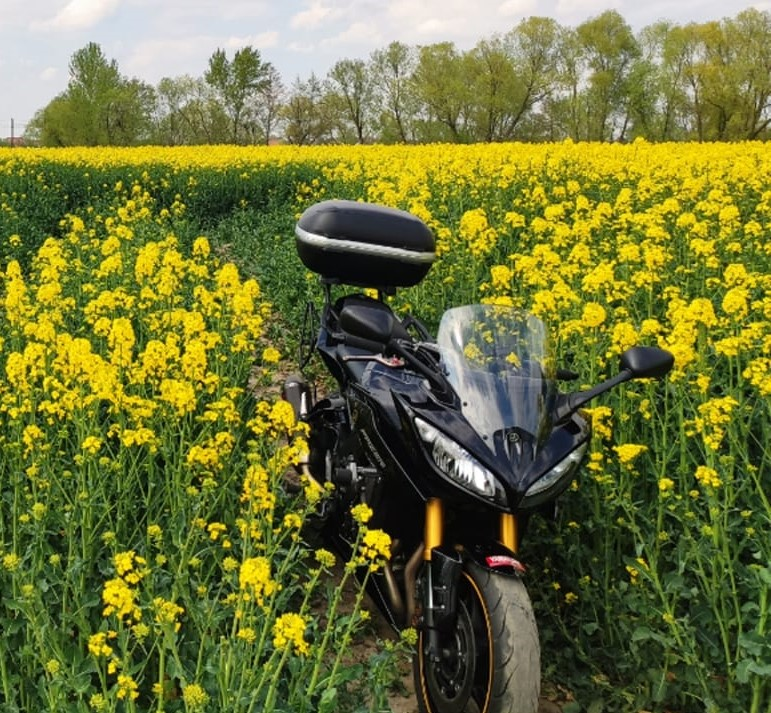
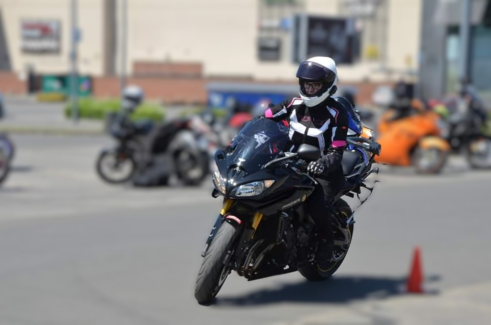
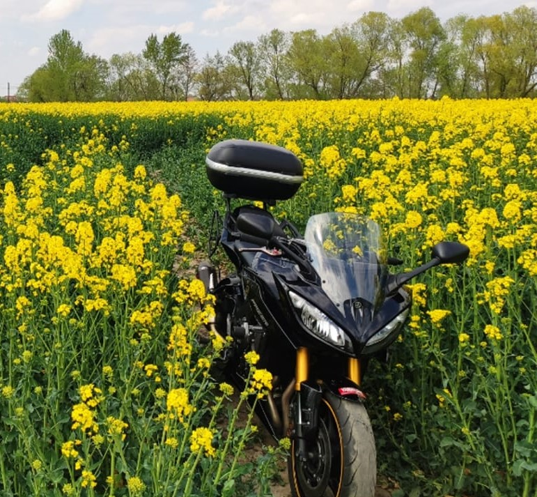
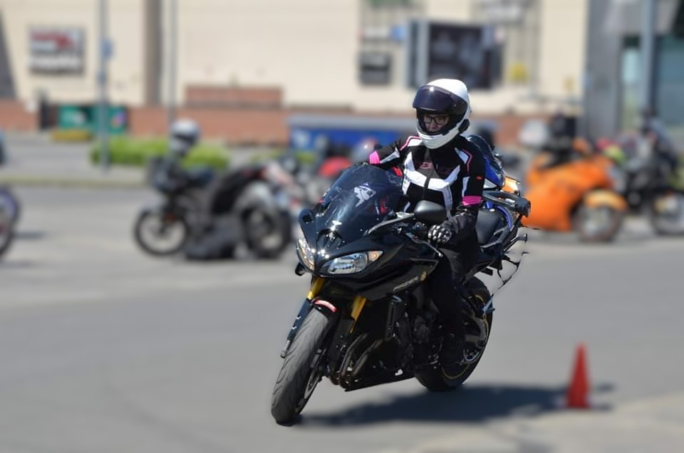
Mam na imię Marta, a mój motocykl to Kawcia (Kawasaki Z750)
Mam na imię Marta ale wołają na mnie Ruda i oto nasza historia.
Ruda + Yamaha Fazerka – kierowco patrz często w lusterka
Z czarno- różowym warkoczem na kasku, wiadomo na czarnym złote dodaje blasku :)
Marta ostrożnie między samochodami jeździć potrafi, a nóż jakiś wariat na drodze się trafi.
Na drodze jednością z wzajemną miłością, odpowiedzialnie po drogach śmigają, prawie rzecz można przepisów przestrzegają.
Ruda swój motor kocha nad życie i zawsze traktuje go należycie, z pieczołowitością i wielką miłością.
Rozumieją się jak mało kto ze swoją maszyną, smucą się obie gdy motocykliści na drogach giną.
Każda impreza motocyklowa tylko hasełko i już jest gotowa, by innym pomagać na zjeździe i Marta na czarno-złotym pomaga pojeździe. Czy to zlot czy Motomikołaje, nigdy z motorem się nie rozstaje.
Razem do pomocy zawsze chętnie stają i na motorku szczęście innym dają
Ta para wręcz jest doskonała, widać że Marta do Fazerki miłością pała.
Każdą wolna chwilkę razem spędzają, od razu widać jak się kochają.
A oto nasza historia.
Zaczęło się niepozornie od Hondy NSR 125. Niestety szybko brakło mi mocy. Po pół roku i wbrew wszystkim zrobiłam prawo jazdy na A, a uwierzcie mi nie było łatwo – dwa razy motocykl egzaminacyjny leżał wraz ze mną na WORDZie :D Ja jednak nie poddałam się – chciałam spełnić marzenia i za 3 podejściem do egzaminu mi się już udało ( herbatka melisa na uspokojenie przed pomogła ).
Po długich poszukiwaniach trafiłam na tą jedyną, czarną perełkę, w której zakochałam się od pierwszego wejrzenia.
W sezonie jeździ ze mną wszędzie czy to w kolo komina, czy na zakupy czy na dłuższą wycieczkę. A w rzepaku ma zdjęcia obowiązkowe co roku :)
Zimą stoi sobie w cieplutkim garażu ale są dwa wyjątki Moto Mikołaje i WOŚP – musi wychylić się spod swojej ciepłej pierzynki i pomóc w tych dwóch ważnych dla nas wydarzeniach. I potem już z niecierpliwością czekamy do wiosny, na kolejne dawki adrenaliny.
Jest dla mnie bezcenna – działa jak najlepszy środek antystresowy – jedziemy razem przed siebie i wracam z czystym umysłem i naładowana dobrą energią.
Długo, długo jej nie zamienię na lepszy model.
Paweł
Mam na imię Marta, a mój motocykl to Kawcia (Kawasaki Z750)
Drogi Motoczwartku :)
Nazywam się Paweł, a moja historia z motocyklami jest opowieścią o pasji, samodoskonaleniu i przemianie. Od dzieciństwa motocykle fascynowały mnie bezgranicznie. Pamiętam jeszcze jak Max Biaggi przechodził z 250 do 500 i jak Rossi toczył z nim swoje pierwsze pojedynki. Niemniej jednak swój pierwszy motocykl kupiłem dopiero po około 20 latach marzeń o motocyklu.
Pierwsza Honda Hornet, którą zakupiłem jeszcze przed zdobyciem prawa jazdy, była nie tylko środkiem transportu i próbą zaspokojenia dziecięcych marzeń, ale stała się kluczowym elementem w najtrudniejszych chwilach mojego życia. Była moją ucieczką i terapią, kiedy walczyłem z ciemną chorobą, która toczyła moje myśli - wtedy jeszcze nie wiedziałem z czym się mierzę. Nieświadomy głębokiej i ciężkiej depresji przez wiele lat po prostu motocykl był moją ucieczką przed światem i emocjami, Gdy nadeszły najgorsze dni, jazda na motocyklu przestała mnie cieszyć, zacząłem zauważać, że zaczynam kusić los. Nie chodziło tu o mnie, wtedy już o siebie nie dbałem - ale wiedziałem ile znaczę dla kilku osób w moim życiu i to mnie tutaj trzymało. I tak zdałem sobie sprawę, że ta pasja może być niebezpieczna, jeśli nie będę panował nad swoimi emocjami.
Obiecałem sobie, że nie wrócę na motocykl, dopóki nie nauczę się opanowania i nie pokocham życia na nowo. Ta decyzja była początkiem mojej transformacji. Przez lata terapii i pracy nad sobą zrozumiałem, że motocykl to dla mnie więcej niż jazda - to narzędzie do poznawania siebie i sztuka, której opanowanie wymaga pełnej harmonii umysłu i ciała.
Zawsze pociągały mnie mocne motocykle. I po Hondzie Hornet 600 stwierdziłem, że chciałbym coś mocniejszego, cięższego. Coś takiego mocnego, że aż bez sensu ;)
Minęły lata, zanim znów poczułem, że jestem gotowy. Moja terapia, ciężka praca nad sobą i świadome budowanie wewnętrznego spokoju pozwoliły mi na zakup nowego motocykla - Diavela. Jest to motocykl mocny, ale moje podejście do jazdy zmieniło się diametralnie. Jeżdżę spokojnie, nie pędzę przez miasto, nie daję się sprowokować na światłach. Moje 160 koni mechanicznych służy teraz zupełnie innemu celowi - jest narzędziem medytacji i świadomego doświadczania radości z jazdy. One tam po prostu są - bo Włosi stwierdzili, że czemu nie.
Kiedy teraz wsiadam na motocykl, robię to z pełną świadomością. Jeśli czuję potrzebę uwolnienia emocji, robię to z dala od miejskiego zgiełku, tam, gdzie jedynym świadkiem mojej podróży jest natura - w sensie wiewiórka, krowa, koń, kogut, ryś... bażant...
Jest to dla mnie nie tylko jazda, ale przede wszystkim moment pełen introspekcji i głębokiego połączenia z samym sobą.
Ta przemiana, którą przeszedłem, oraz moja obecna relacja z motocyklami, to dla mnie symbol zwycięstwa nad własnymi lękami i potwierdzenie, że jestem na właściwej drodze. To nie tylko pasja, to część mojej codziennej praktyki życiowej, która uczy mnie, jak ważne jest czerpanie radości z każdej chwili.
Dzięki temu wszystkiemu motocykl stał się dla mnie czymś więcej niż hobby - to życiowa pasja i filozofia, która uczy mnie, jak ważna jest równowaga między ciałem a umysłem.
Chcę dzielić się tą pasją i pokazywać, że motocyklizm to nie tylko "kręcenie do odcinki" czy "palenie gumy". To także dbałość o emocje i bezpieczeństwo - zarówno swoje, jak i innych. Wierzę, że mogę inspirować innych do świadomego i odpowiedzialnego podejścia do jazdy na motocyklu. Propaguję tzw Moto Mindfulness, czerpię radość z każdej cząsteczki powietrza, która mnie owiewa, ciepła asfaltu, ciepła od silnika, szumu wiatru, zapachu jak zmienia się krajobraz, znikającej pod kołami drogi, nawet czasem jak wyłączę silnik to stoję i słucham ... jak ten metal jeszcze żyje i oddycha. Motocykla można doświadczać na wiele sposobów. Często ich nie doświadczamy w pełni.
Jestem spokojnym człowiekiem, który wierzy w to, że poskromił swoje demony, bestie, nerwy i frustracje. Myślę, że dzięki temu spokojowi, jestem w stanie ogarnąć ukrytą moc. Myślę, że właśnie dlatego tworzę z tym motocyklem dopasowany duet, oboje mamy w sobie demony, które, jeśli im na to pozwolimy i przestaniemy kontrolować, mogą nas bardzo skrzywdzić.
to kawałek mojej historii